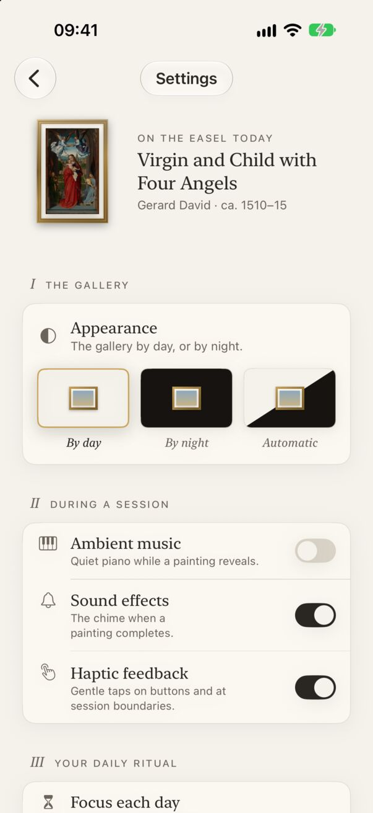

Abrir os Ajustes
Toque na engrenagem no canto superior direito da tela inicial. Os Ajustes deslizam da direita; toque em ‹ para fechá-los. No iPad com teclado, pressione ⌘,.


As salas
- A galeria: Aparência. De dia é uma parede clara e acolhedora; De noite, uma sala cor de carvão profundo; Automático segue o modo claro ou escuro do seu iPhone.
- Durante uma sessão: música ambiente, efeitos sonoros, resposta tátil.
- Seu ritual diário: Foco por dia (a meta que revela o widget Pintura do dia) e o lembrete diário.
- Apoio: Torne-se um mecenas e o recado de sábado.
- Sobre o Easel: idioma, sobre o criador, ver a introdução de novo, política de privacidade e feedback.
Idioma
O Easel fala inglês, polonês, espanhol, francês, chinês simplificado, hindi, japonês, coreano e português do Brasil. Toque em Idioma nos Ajustes para abrir a página do Easel no iOS e escolher um; o Easel reinicia no novo idioma.
Ver a introdução de novo
Toque em Ver introdução em Sobre o Easel para rever o tour de quatro páginas sobre como o Easel funciona.